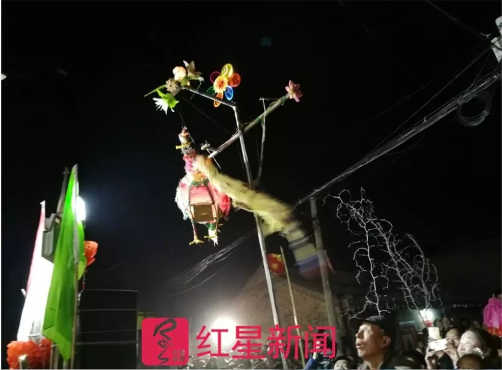

文
斗文
出牌子与后场子。牌子上的成语首尾贯通，名曰“一线穿”；后场子即骂阵队，比内容、口才、韵律。
村里人说，这套流程是仿轩辕黄帝“金刚仙箕天兵出师布阵”的法子：先派兵挑斗，再列阵显威，然后出师，最后收兵。
四个环节各有分工：骂阵负责把火挑起来，拜请负责把阵势摆出来，出杆负责亮本事，夜征负责结算——谁家白天出了错，夜里就要当众被数落。
壹MAZHEN
骂阵
挑社火 · 后场子
贰BAIQING
拜请
一说应作“摆请”
叁CHUGAN
出杆
最亮眼的一段
肆YEZHENG
夜征
核心与灵魂
The Taunt
又叫“挑社火”“后场子”。它的任务不是表演，是把对方“骂”起来——骂得越狠，对方越下不来台，这一年就越办得成。
壹 · 骂阵
挑社火 · 后场子
村民们敲锣打鼓、燃放土炮，骂阵者反穿羊皮袄，到对方村里挑骂。反穿皮袄是一身“护身符”：只要这样穿着，骂到祖宗也不伤两村和气，被骂的人不准当场还嘴。
骂阵一般从正月初二持续到初十之前。那时社火还没“成”，两村都在观望；后场子的作用就是挑衅，把对方的斗志激出来。有一年西常村不太想办，东常村骂得厉害，初十那天两村的社火头才携手撞钟，这一年算是成了。
贰 · 拜请
一说应作“摆请”
骂阵之后是拜请：耍社火前，邀请对方村民走出家门，到巷道里来看社火。队伍一般由探马开道，二百余人组成——三眼炮、开场锣、横额、彩旗、驮轿、标驮、花锣鼓、官牌、锣鼓队、秧歌队、高跷队、芯子队、乐队、旱船队、龙队、总督大人。
最前必有三匹马：打头的叫探马，中间是报马，最后是伯马，马上人的扮相固定，不能出错。当天下午，三个探马先到对方村跑两遭，第三次才带上拜请队进村预演，意思是通知：我们要来“出社火”了。
有老艺人认为“拜请”这个名字不准：这是游行中唯一需要进对方村的环节，本质上是显摆加求骂，叫“摆请”更合适。
叁 · 出杆
最亮眼，也最容易出错
出杆是耍社火中最亮眼、最精彩、难度最大的部分。两村常常竭尽所能，纷纷亮出绝活。队伍分为内阵、后阵：内阵为左青龙、右白虎，由兵卒、炮、锣鼓、火铳、号角、大旗、日月灯、标驮、彩驮、驮轿、禧刍、彩杆组成；后阵为玄武星，由圣旨、印玺、赶脚、总督大人、骂阵队组成。
彩杆上立着四五岁的孩子，扮的是传统戏曲里的人物——《西厢记》《白蛇传》、三国、西游、《李彦贵卖水》《拾玉镯》里的桥段最常被选用。孩子脖子里挂着牌牌，牌牌上的字讲究“一字串”：每个四字词组的首字必须相同。
细节不能错。错了，当晚对方就来夜骂，只能等着被数落。
肆 · 夜征
夜骂 · 核心与灵魂
夜征的重点是“骂”，是骂社火的核心与灵魂。骂阵队最为醒目，极尽讽刺、挖苦、挑剔之能事：骂对方村的失误，骂贪官污吏，骂歪风邪气，骂地痞流氓，骂违法乱纪。
骂词多是根据白天对方村拜请、出杆两项的毛病，再联系过去一年村中发生的大事即兴创作。要求吐字清楚、声音洪亮、押韵顺口、幽默巧妙，从内容、口才、韵律上压倒对方。
这不是泄愤，是记录。哪条路烂了、谁家占了道、哪个干部不作为，都会被编进骂词里，当着两村人的面唱出来。

Five Contests
两村都希望高出对方一筹，扬眉吐气。斗的内容有五样，从文到丑，各有一套输赢标准。
文
斗文
出牌子与后场子。牌子上的成语首尾贯通，名曰“一线穿”；后场子即骂阵队，比内容、口才、韵律。
武
斗武
比探马、锣鼓、阵容，讲究从气势上压倒对方。
巧
斗巧
比彩杆、花锣鼓、彩船，讲究从艺术精巧上压倒对方。
富
斗富
比衣装华丽、彩杆的数量与种类，讲究从富有程度上压倒对方。
丑
斗丑
比骂阵人装扮千奇百怪、言语刻薄、所骂内容热度高，讲究出奇制胜。
Three Taboos
三条禁令的背后，是一套很清楚的边界：骂，只骂“内部人”和“公共人”。外来户、外嫁女、老实庄稼汉，都不在这张公共账本上。他们不参与村务，也就不必为村务负责。
反过来，越是有权有势有影响的人，越躲不开。村里叫这类人“人物头、村盖子、人尖子”——骂他们，才有分量，也才有人听。
这条边界还带来一个副产品：被骂是一种资格。所以才有“看得起你才骂你”，才有被骂的人反过来给骂者送烟送酒。
边界
涉及隐私、人身攻击、侮辱女性的内容，在近年的表演中已被村民主动剔除。骂词的锋芒转向公共事务——环保、道路、干部作风，都成了新的题材。
Specimens
骂社火的骂词不是脏话，是有格律、有指向、有分寸的民间韵文。这里收两件标本，连同它们的语法与语境。
谁化的妆没学精，鼻子眼睛分不清；
女不女男不男，活脱一个个潘金莲……
万斤粮户 · 万元富户 · 万只鸡户 · 万紫千红……
首牌“万”字开头，尾牌“以万贯通”——中间几十块牌子，首字必须一样。
说明：本站仅收录少量已见于公开报道的骂词，并附语法与语境注释。骂社火的锋芒在于公共批评，而非人身侮辱；脱离语境的粗口，既不构成理解，也不值得传播。
十一日开始，十六日结束， 东起西落，交替三次。
村中口述之御批 · 亦见《骂社火歌》
影像档案